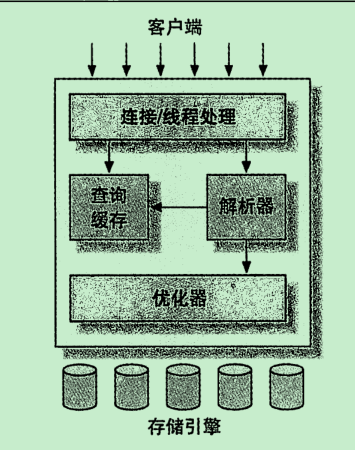

MySQL-1-基本架构和基础知识
MySQL逻辑架构

第一层：基本上是所有数据库都共有的，大多数基于网络的客户端/服务器的工具或者服务都有类似的架构。比如连接处理、授权认证、完全等等。
第二层：大多数MySQL的核心服务功能都在这一层，包括查询解析、分析、优化、缓存以及所有内置函数，所有跨存储引擎的功能都在这一层实现：存储过程、触发器、视图等。
第三层：包含存储引擎。存储引擎负责MySQL中数据的存储和提取。每个存储引擎都有它的优势。服务器通过API与存储引擎进行通信。这些接口屏蔽了不同存储引擎之间的差异，使得这些差异对上层的查询过程透明。存储引擎API包含几十个底层函数，用于执行诸如“开始一个事务”或者“根据“主键提取一行记录”等操作。但是存储引擎不会去解析SQL，不同存储引擎之间也不会相互通信，而只是简单地响应上层服务器和请求。
关于数据库的连接管理
每个客户端连接都会在服务器进程中拥有一个线程，这个连接的查询只会在这个单独的线程中执行，该线程只能轮流在某个CPU核心或者CPU中运行。服务器会负责缓存线程，因此不需要为每一个新建的连接创建或者销毁线程。
优化与执行
MySQL会解析查询，并创建内部数据结构(解析树)，然后对其进行各种优化，包括重写查询、决定表的读取顺序，用户可以通过特殊的关键字提示(hint)优化器，影响它的决策过程，也可以请求优化器解释(explain)优化过程的各个因素，使用户可以知道服务器是如何进行优化决策的，并提供一个参考基准，便于用户重构查询和schema、修改相关配置，使应用尽可能高效运行。
优化器并不关心表使用的是什么存储引擎，但是存储引擎对优化查询是有影响的。优化器会请求存储引擎提供容量或某个具体操作的开销信息，以及表数据的统计信息等。例如，某些存储引擎的某种索引，可能对一些特定的查询有优化。
并发控制
在处理并发读或者写时，可以通过实现一个由两种类型的锁组成的锁系统来解决问题。这两种类型的锁通常被称为共享锁和拍他锁，也叫读锁和写锁。
读锁是共享的，或者说是相互不阻塞的。多个客户在同一个时刻可以同时读取同一个资源，而互不干扰。
写锁是排他的，也就是说一个写锁会阻塞其他的写锁和读锁，这是出于安全策略的考虑，只有这样，才能确保在给定时间里，只有一个用户能执行写入，并防止其他用户读取正在写入的统一资源。
在实际的数据库系统中，每时每刻都在锁定，当某个用户在修改某一部分数据时，MySQL会通过锁定防止其他用户读取同一数据。
锁粒度
一种提高共享资源并发性的方式就是让锁定对象更具有选择性。简言之就是让锁的可操作性更精确。更理想的方式是，只对修改的数据进行精确的锁定。在给定的资源上，锁定的数据量越少，则系统的并发越高，只要相互之间不发生冲突(这种冲突一般指发生死锁的情况)即可。
数据库的主要作用是存储数据，由于对锁的各种操作都会增加系统的开销，因此如果花费大量的时间来管理锁，就本末倒置了，于是需要在锁的开销和数据的安全性之间寻求一种平衡，这种平衡当然也会影响到性能。这种平衡我们称之为锁策略。
MySQL的每种存储引擎都可以实现自己的锁策略和锁粒度
下面有两种锁策略：
表锁(table lock)
表锁是MySQL中最基本的锁策略，也是开销最小的策略。表锁顾名思义就是锁定整张表。一个用户在对表进行写操作(增、删、改)前，需要先获得写锁，这会阻塞其他用户对该表的所有读写操作。只有没有写锁时，其他读取的用户才能获得读锁，读锁之间是相互独立不阻塞的。
由于写锁的优先级高于读锁，因此一个写锁请求可能会被插入到读锁队列的前面，反之是不行的。
行级锁(row lock)
行锁可以最大程度地支持并发处理(当然也带来了最大开销)。行级锁只在存储引擎层实现，服务器层完全不了解存储引擎的锁实现。
事务
事务就是一组要么全部执行，要么全部不执行SQL操作。事务具有原子性、一致性、隔离性、持久性四大特性。